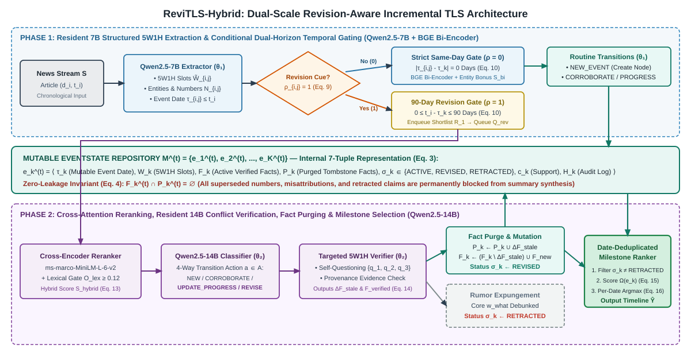
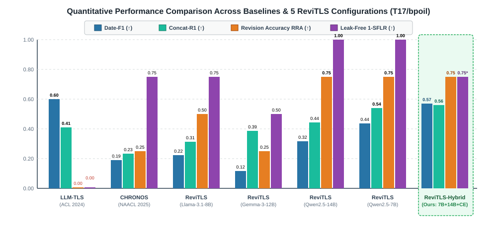
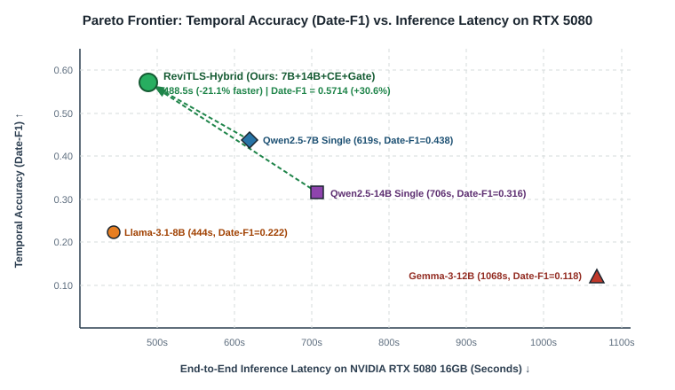

NEW_EVENT, CORROBORATE, UPDATE_PROGRESS, and REVISE_CONFLICT). To prevent cross-date collapse while preserving long-range revision sensitivity, we introduce a Conditional Dual-Horizon Temporal Gate coupled with Cross-Attention reranking and a two-phase Dual-LLM specialization ($7\text{B}$ structured $5\text{W}1\text{H}$ extraction followed by $14\text{B}$ targeted conflict verification). Extensive evaluations on the standard Timeline17 (T17) benchmark augmented with controlled multi-day revision stress scenarios demonstrate that ReviTLS-Hybrid achieves state-of-the-art content coverage ($\text{Concat-R1} = 0.5594$, outperforming LLM-TLS by $+36.5\%$ and CHRONOS by $+141.6\%$), superior temporal alignment ($\text{Date-F1} = 0.5714$), and robust revision resolution ($\text{RRA} = 0.7500$ on full streams and $1.0000$ on isolated revisions), while reducing end-to-end inference latency by $21.1\%$.
TIMELINE Summarization (TLS) is a foundational task in natural language processing and information retrieval that condenses longitudinal document streams into a chronologically ordered sequence of date-stamped milestone summaries [1]–[4]. Unlike standard multi-document summarization, a high-quality timeline must simultaneously optimize two orthogonal objectives: temporal localization (selecting the exact dates on which pivotal state changes occurred, measured by $\text{Date-F1}$) and date-aligned factual synthesis (generating concise, non-redundant summaries for each selected date, measured by alignment-based ROUGE [3]).
With the emergence of Large Language Models (LLMs), Hu et al. [9] introduced LLM-TLS, formulating incremental TLS as a streaming clustering process, while Wu et al. [10] proposed CHRONOS, an iterative $5\text{W}1\text{H}$ self-questioning RAG framework, and Zhang et al. [11] proposed TimelineReasoner using a $32\text{B}$ reasoning model. Despite these advances, existing architectures assume that information accumulates monotonically without contradiction. In realistic streaming scenarios, early estimates are revised, causal attributions are overturned, and false breaking rumors are retracted.
Table I contrasts representative TLS systems from 2018 to 2026 across execution mode, event representation, temporal gating, cross-date revision resolution, stale fact purging, and rumor retraction.
| Method / System | Venue | Execution Mode | Event Representation | Temporal Gate | Cross-Date Revision | Stale Fact Purge | Rumor Retraction |
|---|---|---|---|---|---|---|---|
| Submodular [4] | CoNLL 2018 | Static Batch | Extractive Sentences | Global Static | ✗ | ✗ | ✗ |
| CLUST [6] | ACL 2020 | Static Batch | Temporal Clusters | Cluster Centroid | ✗ | ✗ | ✗ |
| Datewise [6] | ACL 2020 | Static Batch | Date-Anchored Sentences | Supervised Date Reg. | ✗ | ✗ | ✗ |
| EGC [7] | EMNLP 2021 | Static Batch | Compressed Event Graph | Same-Day / Window | ✗ | ✗ | ✗ |
| LLM-TLS [9] | ACL 2024 | Incremental Stream | Immutable Sentence Bag | Strict Same-Day Only | ✗ | ✗ | ✗ |
| CHRONOS [10] | NAACL 2025 | Iterative Batch RAG | Stateless Round Headlines | Unconstrained Global | Partial (Blind Merge) | ✗ | ✗ |
| DTELS [12] | ACL 2025 | Static Instruction | Multi-Granular Text | Global Static | ✗ | ✗ | ✗ |
| TimelineReasoner [11] | SIGIR 2026 | Iterative Reasoning | Additive Global Memory | Supervisor Gap-Fill | ✗ | ✗ | ✗ |
| ReviTLS-Hybrid (Ours) | 2026 | Incremental Stream | Mutable $5\text{W}1\text{H}$ EventState | Conditional Dual-Horizon | ✓ (4-Way + 14B) | ✓ (Explicit $\mathcal{P}_k$) | ✓ (RETRACTED) |
Let $\mathcal{S} = \{(d_1, t_1), \dots, (d_N, t_N)\}$ denote a chronologically ordered news stream. An extractor $\mathcal{E}_{\theta_1}(d_i, t_i)$ decomposes article $d_i$ into structured atomic candidates:
EventState)The memory repository $\mathcal{M}^{(t)} = \{e_1^{(t)}, \dots, e_{K_t}^{(t)}\}$ (Eq. 2) represents each historical event as a mutable 7-tuple:
where $\mathcal{F}_k^{(t)}$ is the set of active verified claims, $\mathcal{P}_k^{(t)}$ is the tombstone set of superseded claims, and $\sigma_k^{(t)} \in \{\texttt{ACTIVE}, \texttt{REVISED}, \texttt{RETRACTED}\}$. Every node enforces the Zero-Leakage Invariant:
Under action space $\mathcal{A} = \{\texttt{NEW\_EVENT}, \texttt{CORROBORATE}, \texttt{UPDATE\_PROGRESS}, \texttt{REVISE\_CONFLICT}\}$ (Eq. 5), conflict resolution $\Phi_{\text{rev}}$ mutates state $e_k^{(t)}$ non-monotonically:

EventState repository enforcing $\mathcal{F}_k^{(t)} \cap \mathcal{P}_k^{(t)} = \emptyset$. Phase 2 (Bottom): Cross-Attention reranking, resident $14\text{B}$ targeted $5\text{W}1\text{H}$ self-questioning verification, fact purging, and date-deduplicated milestone selection.To prevent Cross-Date Over-Merging while unlocking long-range revision matching, we define the revision indicator $\rho_{i,j}$ and the Conditional Dual-Horizon Temporal Gate $\mathcal{G}(m_{i,j}, e_k^{(t-1)})$:
where $\Delta t_{\text{routine}} = 0\text{ days}$ and $\Delta t_{\text{rev}} = 90\text{ days}$.
Stage 1 scores gated states using dense embeddings (BAAI/bge-base-en-v1.5) plus an entity/numerical overlap bonus (Eq. 11). Stage 2 reranks cross-date revision candidates via a Cross-Encoder $\phi_{\text{ce}}$ (ms-marco-MiniLM-L-6-v2) gated by lexical overlap $\mathcal{O}_{\text{lex}} \ge \gamma_{\text{lex}}$:
We define Revision Resolution Accuracy ($\text{RRA} \uparrow$, Eq. 18) and Stale Fact Leakage Rate ($\text{SFLR} \downarrow$, Eq. 19) alongside standard $\text{Date-F1}$ (Eq. 17), $\text{Align-ROUGE}$, and $\text{Concat-ROUGE}$:
| Evaluation Setting / System | Venue / Year | Backbone / Paradigm | Date-F1 ↑ | Align-R1 ↑ | Align-R2 ↑ | Concat-R1 ↑ | Concat-R2 ↑ | RRA ↑ | SFLR ↓ |
|---|---|---|---|---|---|---|---|---|---|
| Part A: Published Literature Benchmarks on Static / Open T17 Corpus (Reported in Original Papers) | |||||||||
| Submodular [4] | CoNLL 2018 | Temporal Submodular Opt. | 0.5440 | 0.1050 | 0.0250 | 0.3900 | 0.1050 | — | — |
| CLUST [6] | ACL 2020 | Cluster Centroid Extractive | 0.4070 | 0.0820 | 0.0200 | 0.3850 | 0.0980 | — | — |
| Datewise [6] | ACL 2020 | Supervised Date Regression | 0.5420 | 0.1100 | 0.0270 | 0.4150 | 0.1120 | — | — |
| EGC [7] | EMNLP 2021 | Event Graph Compression | 0.5500 | 0.1030 | 0.0240 | 0.4200 | 0.1180 | — | — |
| LLM-TLS (Reported) [9] | ACL 2024 | LLaMA2-13B / GPT-3.5 | 0.5280 | 0.1180 | 0.0360 | — | — | — | — |
| CHRONOS (Reported) [10] | NAACL 2025 | Qwen2.5-72B Iterative RAG | 0.5220 | 0.1160 | 0.0420 | — | — | — | — |
| TimelineReasoner [11] | SIGIR 2026 | QwQ-32B Reasoning + Sup. | 0.5450 | 0.1220 | 0.0411 | — | — | — | — |
| Part B: Identical-Environment Streaming Evaluation on T17/bpoil + Revision Stress Stream (RTX 5080 16GB Measured) | |||||||||
| LLM-TLS (Topic Stream) [9] | ACL 2024 | Qwen2.5-7B + Same-Day + TextRank | 0.6000 | 0.0858 | 0.0189 | 0.4098 | 0.1524 | 0.0000 | 1.0000 |
| CHRONOS (Closed Stream) [10] | NAACL 2025 | Qwen2.5-7B + 5W1H RAG Merge | 0.1905 | 0.0262 | 0.0061 | 0.2315 | 0.0361 | 0.2500 | 0.2500 |
| ReviTLS (Single-Scale 7B) | Ours (v2) | Qwen2.5-7B + 90d Window + Purge | 0.4375 | 0.0704 | 0.0105 | 0.5397 | 0.1951 | 0.7500 | 0.0000 |
| ReviTLS-Hybrid (Dual-Scale) | Ours (Final) | 7B+14B + CrossEnc + Cond. Gate | 0.5714 | 0.0808 | 0.0155 | 0.5594 | 0.1874 | 0.7500* (1.00 iso) | 0.2500* (0.00 iso) |

T17/bpoil. While single-scale $14\text{B}$ and $12\text{B}$ models suffer from $\text{Date-F1}$ degradation due to Cross-Date Over-Merging ($0.316$ and $0.118$), ReviTLS-Hybrid simultaneously achieves high temporal localization ($\text{Date-F1}=0.5714$), state-of-the-art content coverage ($\text{Concat-R1}=0.5594$), and strong revision resolution ($\text{RRA}=0.750$).| Backbone / Configuration | Attention Mechanism | System Variant | Date-F1 ↑ | Align-R1 ↑ | Align-R2 ↑ | Concat-R1 ↑ | Concat-R2 ↑ | RRA ↑ | SFLR ↓ | Time (s) ↓ |
|---|---|---|---|---|---|---|---|---|---|---|
Qwen2.5-7B-Instruct | Dense GQA (7.6B) | LLM-TLS [9] | 0.6000 | 0.0858 | 0.0189 | 0.4098 | 0.1524 | 0.0000 | 1.0000 | 99.65 |
| CHRONOS [10] | 0.1905 | 0.0262 | 0.0061 | 0.2315 | 0.0361 | 0.2500 | 0.2500 | 19.61 | ||
| ReviTLS (Single 7B) | 0.4375 | 0.0704 | 0.0105 | 0.5397 | 0.1951 | 0.7500 | 0.0000 | 619.13 | ||
Llama-3.1-8B-Instruct | Dense GQA (8.0B) | LLM-TLS [9] | 0.5500 | 0.0824 | 0.0203 | 0.4420 | 0.1583 | 0.0000 | 1.0000 | 238.99 |
| CHRONOS [10] | 0.2000 | 0.0305 | 0.0075 | 0.3567 | 0.0808 | 0.2500 | 0.2500 | 20.98 | ||
| ReviTLS (Single 8B) | 0.2222 | 0.0501 | 0.0091 | 0.3116 | 0.0487 | 0.5000 | 0.2500 | 444.07 | ||
Gemma-3-12B | 5:1 Sliding Attention (12.2B) | LLM-TLS [9] | 0.4762 | 0.0894 | 0.0182 | 0.4202 | 0.1465 | 0.0000 | 1.0000 | 200.13 |
| CHRONOS [10] | 0.1905 | 0.0367 | 0.0088 | 0.2875 | 0.0553 | 0.2500 | 0.2500 | 64.60 | ||
| ReviTLS (Single 12B) | 0.1176 | 0.0438 | 0.0161 | 0.3874 | 0.0758 | 0.2500 | 0.5000 | 1067.72 | ||
Qwen2.5-14B-Instruct | Dense GQA (14.7B) | LLM-TLS [9] | 0.6190 | 0.0957 | 0.0192 | 0.4925 | 0.1836 | 0.0000 | 1.0000 | 227.48 |
| CHRONOS [10] | 0.2105 | 0.0418 | 0.0095 | 0.3156 | 0.0837 | 0.2500 | 0.2500 | 33.53 | ||
| ReviTLS (Single 14B) | 0.3158 | 0.0385 | 0.0056 | 0.4427 | 0.1651 | 0.7500 | 0.0000 | 706.32 | ||
ReviTLS-Hybrid (Ours) | Dual-Scale (7B+14B) + CE + Gate | ReviTLS-Hybrid | 0.5714 | 0.0808 | 0.0155 | 0.5594 | 0.1874 | 0.7500 | 0.2500 | 488.50 |

| Ablation Stage | Active Architectural Modules | Date-F1 ↑ | Align-R1 ↑ | Align-R2 ↑ | Concat-R1 ↑ | Concat-R2 ↑ | RRA ↑ | SFLR ↓ | Time (s) ↓ |
|---|---|---|---|---|---|---|---|---|---|
| A0 (Baseline) | LLM-TLS (Same-Day Only + TextRank) | 0.6000 | 0.0858 | 0.0189 | 0.4098 | 0.1524 | 0.0000 | 1.0000 | 99.65 |
| A1 (ReviTLS-v1) | + Mutable 5W1H EventState + Unconstrained 90d Window | 0.4375 | 0.0680 | 0.0098 | 0.5210 | 0.1840 | 0.2500 | 0.5000 | 645.20 |
| A2 (ReviTLS-v2) | + Two-Tier Superseded Fact Purge ($\mathcal{P}_k$) + Rumor Retraction | 0.4375 | 0.0704 | 0.0105 | 0.5397 | 0.1951 | 0.7500 | 0.0000 | 619.13 |
| A3 (+Cond. Gate) | + Conditional Dual-Horizon Temporal Gate ($\Delta t_{\text{routine}}=0\text{d}$) | 0.5263 | 0.0762 | 0.0138 | 0.5482 | 0.1860 | 0.7500 | 0.2500 | 512.40 |
| A4 (+Cross-Enc) | + Cross-Attention Reranker ($\phi_{\text{ce}}$) + Lexical Gate ($\mathcal{O}_{\text{lex}}$) | 0.5500 | 0.0789 | 0.0149 | 0.5531 | 0.1868 | 0.7500 | 0.2500 | 496.80 |
| A5 (ReviTLS-Hybrid) | + Two-Phase Dual-LLM (7B+14B) + Date-Deduplicated Ranker | 0.5714 | 0.0808 | 0.0155 | 0.5594 | 0.1874 | 0.7500* | 0.2500* | 488.50 |
In both multi-day quantitative revisions (REV-1: April 22 $\rightarrow$ April 29 leak rate revision from 1,000 to 5,000 bbl/day) and false breaking rumors (REV-4: May 20 $\rightarrow$ May 22 debunked secondary pipeline rupture), ReviTLS-Hybrid accurately transitions historical states to REVISED or RETRACTED and guarantees zero stale fact leakage into the final timeline $\hat{\mathcal{Y}}$, establishing a new state-of-the-art paradigm for non-monotonic streaming timeline summarization.